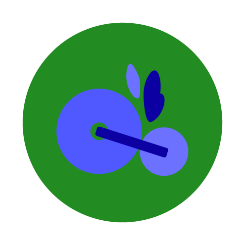
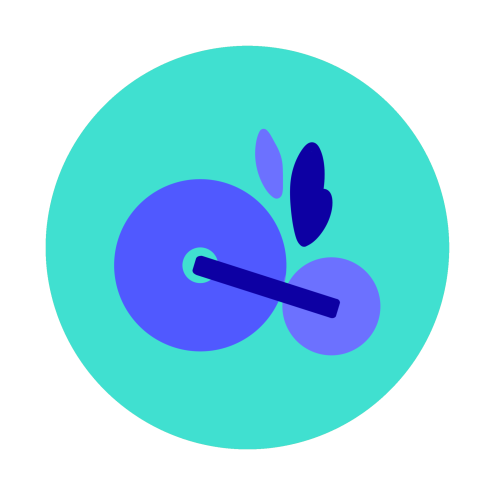
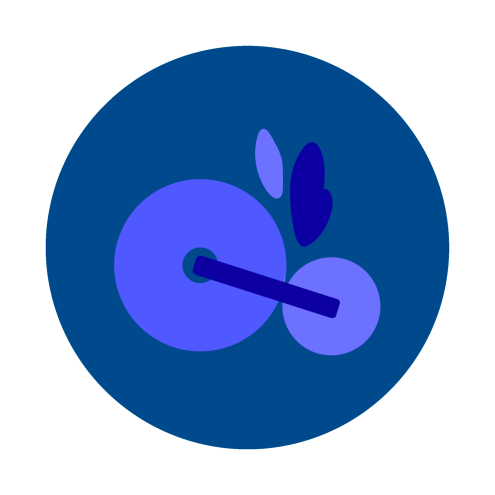
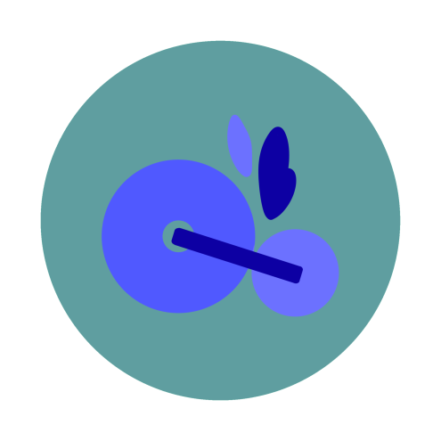

zagza
자전거 도로 그리기
삭제
거리순
0 ~ 1 km
1 ~ 3 km
3 ~ ... km
장소
풍경
공원
강변
바다
도심
?
사용방법
×
오른쪽 위 필터를 사용하시면 원하는 코스를 쉽게 걸러 보실 수 있습니다.
'거리순' 필터는 자전거 코스의 길이를 나타냅니다.
'장소' 필터는 각 구마다의 코스를 나타냅니다.
'풍경' 필터는 공원이나 바다 같은 주변 풍경을 나타냅니다.
지도에 표시되는 마커나 폴리라인 클릭 시 추천하는 코스가 나옵니다.
지도 위의 마커와 폴리라인 종류는 총 4가지로 풍경에 따라 색으로 분류 할 수 있습니다.

공원

강변

바다

도시
왼쪽 옆 화살표 클릭하여 추천하는 코스의 간단한 정보를 확인 하실 수 있습니다.
'자전거도로 그리기' 버튼을 누르면 자전거 코스를 그릴 수 있습니다.
도로 생성시 : '자전거도로 그리기' 버튼 클릭 > 지도 위 시작지점 클릭 > 코너 부분마다 클릭 후 마지막 도착지점 클릭 > 마우스 우클릭 마무리
도로 삭제시 : '삭제' 버튼 클릭 (가장 마지막에 그렸던 도로 부터 삭제 되니 주의)
도로 생성 중 중단: '취소' 버튼 클릭
zagza
?
정보
자전거도로 그리기
삭제
거리순
거리순
0 ~ 1 km
1 ~ 3 km
3 ~ ... km
장소
장소
풍경
풍경
공원
강변
바다
도심